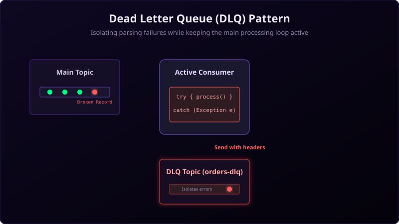

In a distributed event streaming application, you will eventually face poisoned pills: messages that are formatted incorrectly, have missing fields, or trigger unexpected errors in your consumer logic. If a single bad message crashes your consumer or hangs the system, your entire pipeline stalls.
The Dead Letter Queue (DLQ) pattern is the standard industry design to isolate failed messages without disrupting your main processing pipeline.

Imagine a high-speed conveyor belt in a soda bottling factory. Thousands of bottles fly past every minute.
Suddenly, a bottle with a cracked lid (poison pill) approaches the capping machine. If the machine tries to cap the broken bottle, it might jam, halting the entire conveyor line.
Instead, a smart sensor detects the defect, and a robotic arm sweeps the broken bottle into a reject bin (DLQ) on the side. The main conveyor belt never stops, and workers inspect the reject bin later to understand what went wrong.
Why do we need a DLQ?
Without a DLQ, consumer error handling typically falls into two bad extremes:
- Crash and Stall: The consumer retries the same message forever, blocking all subsequent valid messages from being processed.
- Silently Ignore: The consumer logs the error and moves on. The data is lost forever, making it extremely hard to debug or re-run the failed transactions.
A DLQ offers a middle ground: it saves the bad message in a separate Kafka topic so you can examine, fix, and reprocess it later, while letting the consumer group continue processing valid data immediately.
Implementing DLQ in Java
To implement this pattern, wrap your record-processing logic in a try-catch block. When
processing fails, serialize the record, attach metadata headers (like the error message, original topic, and
offset), and publish it to the DLQ topic.
while (true) {
ConsumerRecords<String, String> records = consumer.poll(Duration.ofMillis(100));
for (ConsumerRecord<String, String> record : records) {
try {
// Your primary business logic
processRecord(record);
} catch (Exception e) {
// Route failed message to the Dead Letter Queue (DLQ)
ProducerRecord<String, String> dlqRecord = new ProducerRecord><(
"orders-dlq", record.key(), record.value()
);
// Add metadata headers to help developers troubleshoot
dlqRecord.headers().add("error-message", e.getMessage().getBytes());
dlqRecord.headers().add("original-topic", record.topic().getBytes());
dlqRecord.headers().add("original-offset", Long.toString(record.offset()).getBytes());
dlqRecord.headers().add("original-partition", Integer.toString(record.partition()).getBytes());
producer.send(dlqRecord);
}
}
// Commit offsets only after either processing succeeds or the record is safely in the DLQ
consumer.commitSync();
}Best Practices for Kafka DLQs
- Use descriptive headers: Always include context about *why* the message failed. Add details like exception class names, timestamps, and stack trace snippets.
- Separate retry topics from DLQs: If the error is transient (e.g., database temporarily down), route the message to a retry topic first. Reserve the DLQ for non-retryable errors (e.g., bad JSON format, schema violation).
- Monitor your DLQ size: Configure alerts on your DLQ topic's ingestion rate. A spike in DLQ messages indicates a bug in a new release or a breaking change in an upstream producer.
Conclusion
A Dead Letter Queue is an essential pattern for building resilient, production-ready distributed architectures. By isolating bad records, you protect your system from outages, preserve data integrity, and simplify debugging.